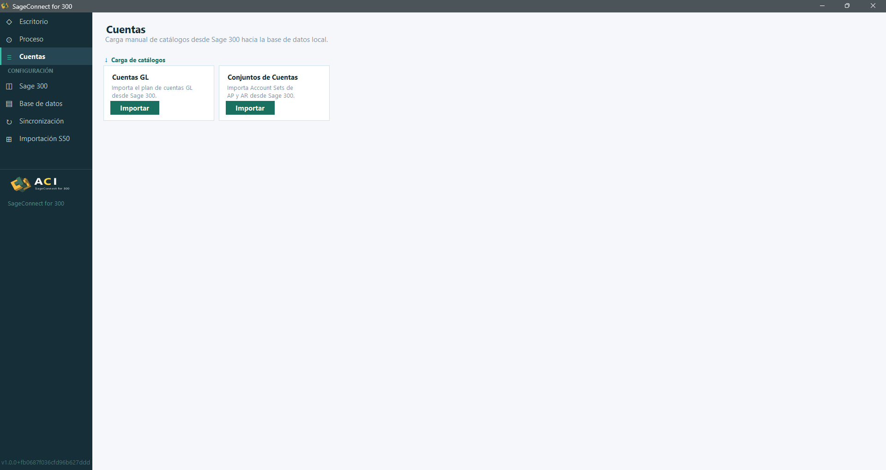
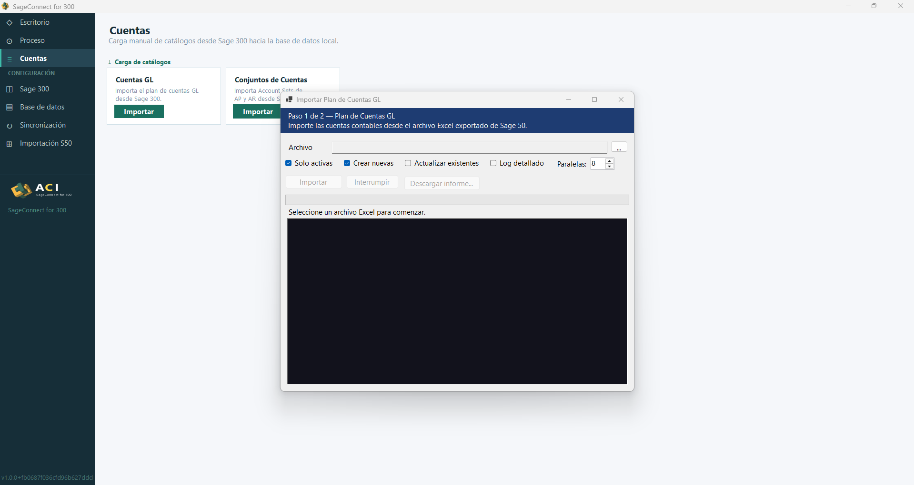
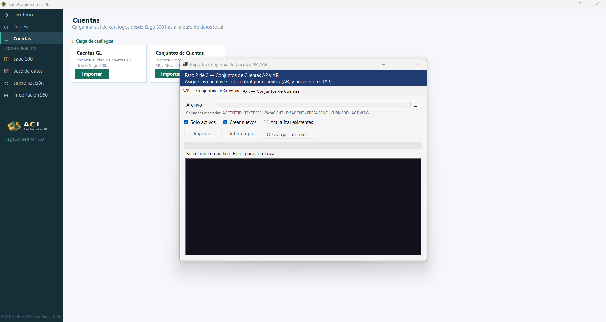

Cuentas GL y conjuntos AP/AR
La sección Cuentas permite importar manualmente los catálogos contables desde Sage 300. Es un paso necesario antes de sincronizar cualquier documento financiero.
§ 01 Cuentas GL
El primer catálogo a cargar es el plan de cuentas. Desde la pantalla principal de Cuentas, pulsa el botón Importar.

Se abre el asistente Importar Plan de Cuentas GL (Paso 1 de 2), donde se selecciona el archivo Excel exportado desde Sage 50. Las opciones disponibles son:
| Opción | Descripción | Por defecto |
|---|---|---|
| Solo activas | Ignora cuentas marcadas como inactivas | Activado |
| Crear nuevas | Inserta cuentas que no existan localmente | Activado |
| Actualizar existentes | Sobrescribe cuentas ya presentes | Desactivado |
| Log detallado | Genera un log línea por línea | Desactivado |
| Paralelas | Hilos de procesamiento simultáneo | 8 |

§ 02 Conjuntos de Cuentas AP / AR
Los Account Sets asocian cuentas GL de control a clientes (AR) y proveedores (AP). Sin ellos, la sincronización de documentos no sabrá qué cuenta imputar.

El asistente presenta dos pestañas con los campos esperados:
-
A/P — Conjuntos de Cuentas:
ACCTSETID · TEXTDESC · PAYACCNT · DISACCNT · PREPACCNT · CURNCOD · ACTIVESW -
A/R — Conjuntos de Cuentas:
ACCTSETID · TEXTDESC · RECACCNT · DISACCNT · PREPACCNT · WRTOFFACC · CURNCOD · ACTIVESW
Cada pestaña permite cargar su Excel correspondiente con las mismas tres opciones de la sección anterior: Solo activos, Crear nuevos y Actualizar existentes.